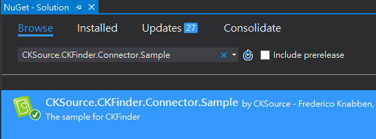
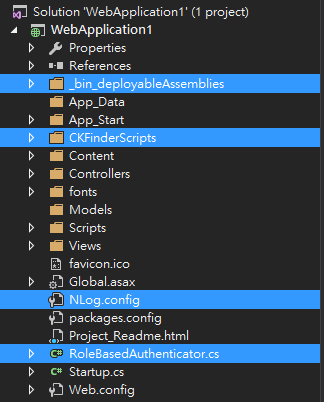
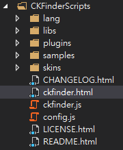
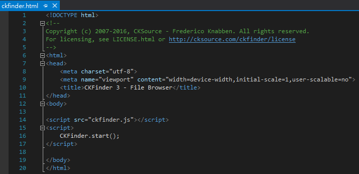
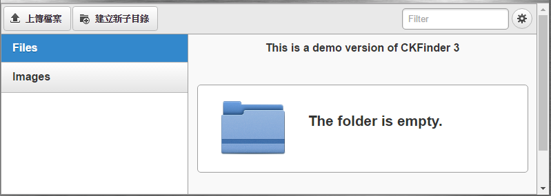
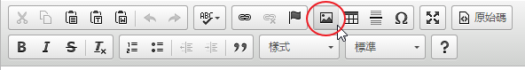
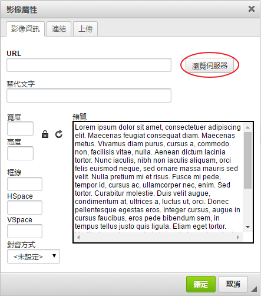
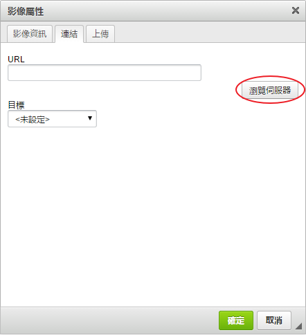
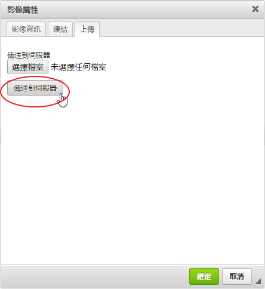

CKEditor 4 CKFinder
此文章大概解說CKFinder跟ASP.NET MVC配合如何使用
一、先創立一個新的MVC專案
二、於NuGet安裝CKSource.CKFinder.Connector.Sample

裝好之後你會發現多了些資料夾(藍底白字部份)

三、直接Run起CKFinder
直接到CKFinderScripts資料夾的ckfinder.html頁面，按「F5」把CKFinder給Run起來。


CKFinder Run起來的畫面如下

由上可知CKFinder是檔案管理程式，那CKFinder如何跟CKEditor整合呢？
四、如果CKFinder要跟CKEditor配合，故，事先弄好CKEditor環境是必須的。
於head tag事先include ckeditor.js檔
<script src="http://cdn.ckeditor.com/4.5.11/standard/ckeditor.js"></script>
再於index.cshtml檔加入
<textarea name="editor2"></textarea> @section scripts{ <script> CKEDITOR.replace('editor2', { extraPlugins: '', height: 300, // Upload images to a CKFinder connector (note that the response type is set to JSON). //uploadUrl: '@Url.Action("UpLoadToDB")', filebrowserImageBrowseUrl: '/CKFinderScripts/ckfinder.html?type=Images', filebrowserImageUploadUrl: '@Url.Action("UpLoadToDB")' + '?command=QuickUpload&type=Images' }); </script> }
filebrowserImageBrowseUrl參數的指定，是用來導向CKFinder。



如上圖的「瀏灠伺服器」按紐，當按下去時就會導到CKFinder
五、QuickUpload功能
CKFinder跟CKEditor的整合於前面的說明告一段落，
這裡額外再介紹另一功能「QuickUpload」，承上例
<textarea name="editor2"></textarea> @section scripts{ <script> CKEDITOR.replace('editor2', { extraPlugins: '', height: 300, // Upload images to a CKFinder connector (note that the response type is set to JSON). //uploadUrl: '@Url.Action("UpLoadToDB")', filebrowserImageBrowseUrl: '/CKFinderScripts/ckfinder.html?type=Images', filebrowserImageUploadUrl: '@Url.Action("UpLoadToDB")' + '?command=QuickUpload&type=Images' }); </script> }
filebrowserImageUploadUrl參數的指定，是用來開啟QuickUpload功能，

如上圖，當「傳送到伺服器」按紐按下時，
會根據filebrowserImageUploadUrl的路徑參數，將圖片上傳到伺服器上，
但是開啟QuickUpload功能之外，也要撰寫對映的後端程式才行。
於Controller加入
using System.Web.Mvc;
using System.Web;
using System.IO;
namespace WebApplication1.Controllers
{
public class HomeController : Controller
{
public ActionResult Index()
{
return View();
}
[HttpPost]
public ActionResult UpLoadToDB(HttpPostedFileBase upload, string CKEditorFuncNum)
{
//只針對「~/userfiles/images」資料夾
if (Directory.Exists(Server.MapPath("~/userfiles/images")) == false)
{
Directory.CreateDirectory(Server.MapPath("~/userfiles/images"));
}
if (System.IO.File.Exists(Path.Combine(Server.MapPath("~/userfiles/images"), upload.FileName)))
{
System.IO.File.Delete(Path.Combine(Server.MapPath("~/userfiles/images"), upload.FileName));
}
upload.SaveAs(Path.Combine(Server.MapPath("~/userfiles/images"), upload.FileName));
//組回傳字串，假設不會有錯誤訊息
string fileName = upload.FileName;
string sPath = @"""/userfiles/images/" + fileName + @"""";
string startTag = @"<script type = ""text/javascript"">";
string endTag = "</script>";
string contentBefore = @"window.parent.CKEDITOR.tools.callFunction( """;
string contentAfter = @""", " + sPath + @", """" );";
string result = startTag + contentBefore + CKEditorFuncNum + contentAfter + endTag;
return Content(result, "text/html");
}
}
}
即可。
結論：
上面的解說只是最基本的輕輕帶過，只求初入門者能無痛切入，
而有很多的眉角、複雜的設定都省略不提以免失焦，日後遇到再深入研究。
參考資料：
CKFinder 3 ASP.NET Connector Documentation
Uploading Dropped or Pasted Files